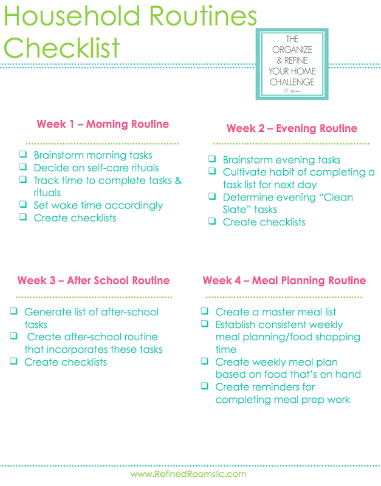

Student Resources - Subpage
Here are the resources I have used as a broke, at times homeless, college student.
What are some things costing you way too much money?
There are the necessities:
- Phone plan
- Wifi
- Utilities
- Groceries
- Gas
- Rent
- Counseling (and prescribed medication)
- School
- Personal Care (like basic toiletries, over the counter medication)
- Insurance (Medical, Car, Life)
Then there are the things that you feel like you can't go without:
- Streaming Services (Netflix, Hulu, Disney+)
- Music (Spotify Premium, Apple Music)
- Memberships (Gym, Costco, Running club, etc.)
- Shopping (Holidays, clothes)
- Eating out
- Alcohol, legal Marijuana, cigarettes, etc.
Let me just start off my saying that the frugal life is best lived when you have a routine. For instance, if you woke up every day at 8 a.m., went for a morning walk, had a staple breakfast food (like oatmeal, but change up the toppings every day) and then got ready for the day, it's more likely you'll make less impulsive decisions later on in the day. When I used to wake up at 12 p.m. one day and then 10 a.m. the next, I had no plan for the day, so I made it up as I went along. I would pick up coffee from Starbucks sometimes, or I would get spicy ramen another time, and yeah, $4 here and 30 cents there isn't that big of a deal. It definitely doesn't feel like it. So why is my credit credit card bill coming back in the hundreds every month? Having no routine is a recipe for disaster, especially if you're struggling financially.
So, first step to getting yourself out of sticky financial situations? Build yourself a positive routine. Your physical and mental health will certainly thank you. How, you might ask? Here's a handy visual for how to make a routine catered to your personal needs.
How to Create a Routine Checklist
Credit: Refined Rooms
-

Okay, you might say, I've been maintaining my routine for a few days now, but I still need significant help with money. So, the next step is making a comprehensive list of all your expenses, and categorizing them in needs and wants.
It's a no-brainer that in order to enjoy life, you have to spend some money. Don't worry, I won't suggest cutting all of your wants from the list. I just want you to reconsider the relevancy of some recurring payments. For example, with the pandemic raging, do you still need your gym membership? They're all holding virtual classes right now, and since you've established a routine, I bet you can plan your workout into your day as well. You're more likely to exercise if you plan it according to the best time for you rather than, say, a kickboxing class at 7 a.m. that you want to have the motivation to do, but know that it probably won't happen.
This is the mindset of a frugal person - we cannot handle paying for something that we barely use, and we don't stay with the hope that our feelings toward certain things like going to the gym will change just because we have membership. Remember, you're the motivator, not the money.
With that in mind, start weeding out the expenses that don't make sense. Do you need that Costco membership when you mostly shop at Safeway and eat out? Probably not, unless you plan to incorporate meal planning from bulk foods in the future. While we're on the same topic, do you need to drink that morning cup of coffee from Peet's, or can you learn how to make quality coffee from beans yourself?
Truly, the frugal lifestyle really teaches us more about ourselves, life hacks, and how to navigate the world constantly looking for opportunities to save. Because we're so vigilant and aware of the resources available to us, a dollar saved here or a penny pinched there can go a long, long way.
-
Learn more about "Optional Obligated Costs"
.
Now, let's talk about necessities. When I had no income and was couch surfing a year ago, I knew that a phone plan would be hard to keep up with. Once my meager savings were up, how would I pay for it? That's when I was introduced to the wonderful world of wifi calling and free cellular text/call apps. Now I know what you're thinking - nothing so vital can be absolutely free. Well, you're wrong because there is this brilliant app called TextNow that you can use to wifi call as well as cellular call. All you need is a smartphone.
Here's the rundown of features: Free calling and texting over wifi voicemail, group texting, and conference calling; use it on phone, tablet, or desktop (just like iMessages); and if you have the Nationwide Sprint Network (chip) in your phone, you can call for FREE, anytime, anyplace, WITHOUT WIFI. If you don't have the chip, there is only a one-time payment of $9.99 compared to the $20-$40 you'd be paying a month.
Now, what do you do if you don't have a smartphone? Or for that matter, any phone at all? Quick tip, don't waste time and money on Apple products because they get outdated quickly, have barely any storage in their cheapest plans, and run out of battery fast. Trust me, I know. I've had a "used before" iPhone 6 for the past 4 years and my phone started crashing and losing apps after the 2nd year. Once it's completely dead, I'll be looking for an android, thank you very much.
If you need help with phones or any other necessities, take a look at the left sidebar for my favorite plans, food drives, and shopping picks.
Finally, create a new expense list, minus all of the expenses you've cut back on because of the resources you've utilized in this article (hopefully you've cut back at least one thing from your list! If not, your routine should help out). You're going to create a budget.
-
Build a Budget in 15 Minutes
.
Get ready to tackle your debt, live a healthier lifestyle, stimulate the economy, and build self discipline. Happy frugalling!